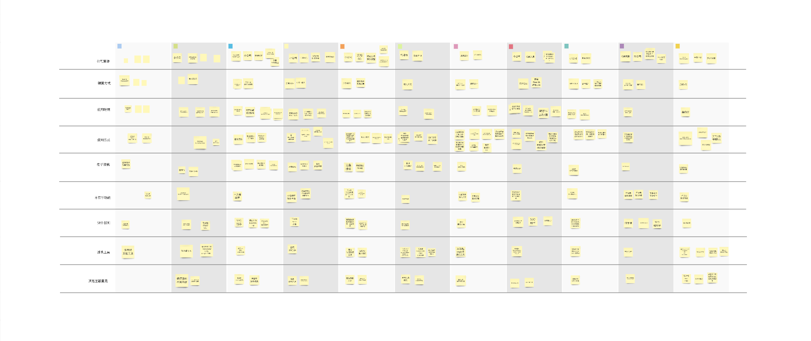
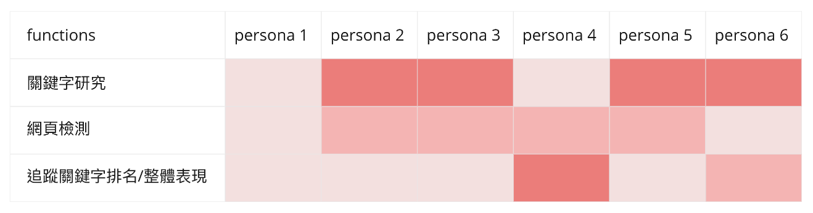
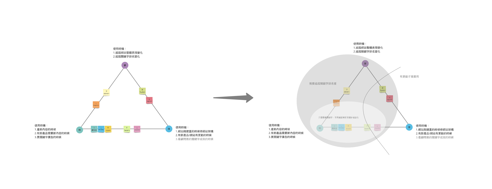

Define User Persona
Survey Design / User Interview / Strategy Proposal
Survey Design / User Interview / Strategy Proposal
To find out what users really need, we conducted user research: survey, interview, to define our user persona.
We aimed at finding out the followings facts from survey and interview:
What do users care about?
How do they use our product?
Why do they need our product?
Not only collecting information from user survey and interview, we also compared these info with the user’s usage data from our tracking tool to check the validity of the answers from user.
We have three main functions in our product： (1) Keyword Research (2)Webpage SEO check (3) Performance / Rank Tracking. We define persona by what function they care, how hey use it, and why they need our product.


We can see almost all users need webpage SEO checking tool only when there’s webpage revision, yet it doesn’t happen frequently. Also, many users need only the keyword research function but don’t need to do tracking, while some needs tracking function more than doing keyword research.
According to user research outcome, we proposed to redesign our product and pricing plans. We should reinforce the combination between keyword research and rank tracking functions, and maybe we could also try to make the less used webpage SEO check function an additional feature.
